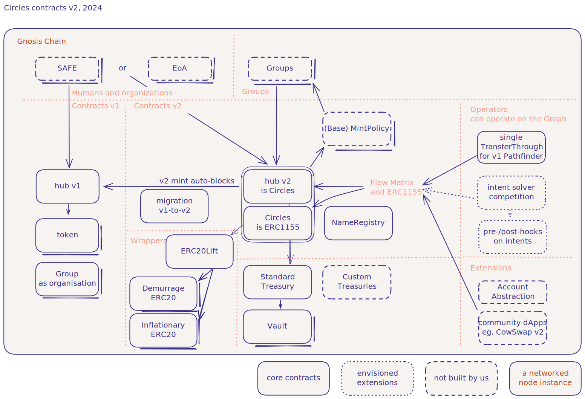

Circles Architectural Overview
Introduction
Circles is a decentralized economic system built on the Gnosis Chain, designed to create and distribute fair and social money through personal currencies. This overview provides a high-level understanding of the system's architecture and how its various components interact.
System Architecture Diagram

Open Circles Architecture diagram in new tab
Core Components
Hub v2 (Circles)
The central contract in the Circles ecosystem is the Hub v2, which serves as the main entry point for interactions with the system. It manages:
- Registration of humans, organizations, and groups
- Minting of personal currencies
- Trust relationships between entities
- Group creation and management
- Minting collateral into group currencies
- Wrapping ERC1155 Circles Ids tokens into ERC20 wrappers
- Demurrage of all Circles tokens equally
The Hub v2 contract implements the ERC1155 standard, allowing it to handle multiple token types efficiently.
NameRegistry
The NameRegistry contract manages names, symbols and metadata for avatars (humans, groups, and organizations):
- Allows humans to register a unique short name (12 characters, base58 encoding)
- Stores custom names for groups and organizations
- Manages custom symbols for group currencies
- Stores and updates metadata digests (eg IPFS CIDs) for avatar profiles
- Names are read by ERC20 contracts for name and symbol
The NameRegistry plays a role in identity management and human-readable addressing within the Circles system, enhancing user experience and facilitating easier identification of avatars and their associated currencies.
Code: /src/names/NameRegistry.sol
Migration
The Migration contract facilitates the transition from Circles v1 to v2, ensuring the ability to migrate token balances:
- Converts v1 Circles to v2 Circles, accounting for inflation and demurrage
- Uses a linear interpolation method to calculate the conversion rate. Corrects for the original convention in hub v1 where 1/3 CRC per hour is issued (8 CRC per day)
- Allows migration of multiple types of Circles balances in a single transaction by one owner
- Locks v1 tokens in the Migration contract and mints equivalent v2 tokens.
- Ensures upon migrating balances that humans are auto-registered in Hub v2 - so that their token is defined
- owners of Circles in v1 can migrate their balances at any time and for any amount they chose to Circles v2.
This Migration system ensures a controlled and secure transition from Circles v1 to v2, maintaining integrity throughout the upgrade process.
Code: /src/migration/Migration.sol
Groups, Policies and Treasury
The Circles ecosystem includes a system for managing group currencies, which allows communities and actors to create their own Circles with customizable policies. This system involves several interconnected components:
Groups
Group avatars (unlike human avatars) cannot mint Circles based on time. Rather group Circles are minted by collaterlising existing Circles into the group if the group trusts that collateral - and a group mint policy can further refine the conditions under which minting is possible.
Groups register as a group avatar in the Hub contract. They have two registration options:
registerGroup(): Uses theStandardTreasurycontract (recommended).registerCustomGroup(): Allows the use of a custom treasury contract.
It is recommended that all groups rely on the standard treasury contract. Users should exercise caution when interacting with custom groups.
Groups require a MintPolicy upon registration, which defines the rules for minting, burning, and redeeming the group's currency.
To explicitly mint group Circles, the owner of collateral for a group can call hub:groupMint(). Code: /src/hub/Hub.sol:groupMint()
Standard Treasury
The Standard Treasury manages collateral for group currencies:
- Handles minting (indirectly) and redemption of group Circles
- To mint group circles, the minter must act through the Hub contract:
- either by calling
Hub:groupMint(), upon which the Hub will structure data for the treasury to forward the collateral to the correct vault of the group - or over path-based transfers, Circles can be minted into group Circles on the fly
- if one sends collateral directly to the Standard Treasury without data or with incorrectly structured data, the treasury will reject the transfer to avoid that funds get lost as only the hub controls minting of group tokens
- if one sends tokens to the treasury with the correct data structure, bypassing the hub contract, the collateral will be locked in the treasury/vault, as the hub will not mint your equivalent group Circles
- either by calling
- To redeem group Cirlces for the underlying collateral from the
Vault, the owner must send the group Circles to the treasury with a correctly structured data package:- the treasury decodes the data to check whether the intent is to redeem
- the treasury passes the user data to the group mint policy, for it to determine the conditions of redemption (treasury is agnostic to data format for group mint policy)
- the treasury can execute the option of burning a portion of the collateral upon redemption
- the treasury can return the collateral to the redeemer -- but checks that the policy's burn amount and return amounts add up to the group currency amount
onERC1155Received: Handles single token transfers (minting or redemption)onERC1155BatchReceived: Handles batch token transfers (minting)- Acts as a factory for
Vaults, deployed for each group to hold their collateral - Creates Vaults for groups as needed
Code: /src/treasury/StandardTreasury.sol
Vaults
Vaults securely store collateral for group currencies:
- Deployed by
StandardTreasuryusing a factory pattern - External functions only accessible by
StandardTreasury - Each group has its own
Vaultto easily query the balance of the vault address for that group
Code: /src/treasury/StandardVault.sol
Mint Policy
Groups can assign a policy contract of their chosing upon registering. Once registered the policy address is immutable, but a policy contract be written:
- for one specific group, or
- to be reusable for many groups to rely on,
- to be stateful or stateless,
- can be parametrized with settable parameters with some governance
- can be deployed as an upgradeable proxy contract
The BaseMintPolicy is the simplest possible definition for a sensible group policy. It serves as a reference implementation, but developers are invited to explore and build their own policies
In general a group (mint) policy must be a contract that implements the rules for minting, burning, and redeeming group currencies:
- Customizable for different group needs
- Default implementation (
BaseMintPolicy.sol) allows all mints/burns and user-specified collateral for redemptions beforeMintPolicy: Validates minting requestsbeforeBurnPolicy: Validates burning requestsbeforeRedeemPolicy: Specifies redemption logic
Code: /src/groups/BaseMintPolicy.sol
System Interaction
- Group Creation:
- User calls
hub.registerGroup() - Hub assigns Standard Treasury
- Standard Treasury creates a Vault for the group upon first group mint
- User calls
- Minting Group Circles:
- Collateral transferred to Treasury
- Treasury forwards collateral to group's Vault
- Mint Policy consulted for approval
- Group Circles minted to user
- Redeeming Group Circles:
- User sends group Circles to Treasury
- Treasury consults Mint Policy for redemption logic
- Vault returns specified collateral to user
- Part of collateral burned if specified by policy
This system provides a flexible framework for creating and managing group currencies within the Circles ecosystem. It allows for customizable minting and redemption policies while ensuring proper collateralization and secure storage of assets.
Remarks
- Circles permits the creation of groups with custom treasury contracts. However, the community should approach such groups with caution until these foreign treasury contracts have been thoroughly vetted.
- Groups have the capability to trust and accept other groups as collateral. This feature enables the construction of sophisticated hierarchical group structures. However, it also introduces the possibility of cyclical collateralization. While this doesn't increase the total number of Circles in circulation, it does allow for arbitrary inflation of collateral through repeated cyclic collateralization. To mitigate this risk, groups may implement protective measures within their group mint policy.
Token Representations
Circles (ERC1155)
The core representation of Circles currencies uses the ERC1155 standard, allowing for efficient management of multiple token types (personal and group currencies) within a single contract:
- Code: /src/circles/Circles.sol
- Code: /src/circles/ERC1155.sol
- Code: /src/circles/DiscountedBalances.sol
- Code: /src/circles/Demurrage.sol
ERC20 Wrappers
To enhance compatibility with existing smart contract ecosystems, Circles provides two types of ERC20 wrappers:
- Demurrage ERC20: This wrapper represents Circles with demurrage applied. It results in rebalancing amounts, reflecting the daily decrease in the balances over time over all Circles.
- Inflationary ERC20: This wrapper represents Circles in their inflationary form. Balances remain static (when not transacted), but the issuance rate for personal Circles mints increases daily. This mechanism offsets the static supply of Circles in circulation.
For every Circles identifier (human or group Circles) either/both ERC20 contract can be deployed upon demand by calling hub:wrap(), and it will ensure the ERC20 contract is deployed if it doesn't already exist. ERC20 contracts can also be created explicitly before wrapping.
If the ERC20 contract already exists, one can also wrap the ERC1155 Circles into ERC20 by directly sending (the correct Circles) to the relevant ERC20 contract.
Both demurrage and inflationary ERC20 Circles can be converted back into demurraged ERC1155 Circles by calling ECR20:unwrap() as the owner of a balance on the desired ERC20 contract.
Both approaches allow Circles to interact more seamlessly with standard ERC20-compatible platforms and protocols while preserving the core economic principles of the Circles system.
ERC20 contracts also implement ERC-2612, aka ERC20Permit.
- Code: /src/lift/DemurrageCircles.sol
- Code: /src/lift/ERC20DiscountedBalances.sol
- Code: /src/lift/InflationaryCircles.sol
- Code: /src/lift/ERC20InflationaryBalances.sol
- Code: /src/circles/BatchedDemurrage.sol
- Code: /src/circles/Demurrage.sol
ERC20Lift
The ERC20Lift contract serves as a factory-bridge between the ERC1155 and ERC20 representations, ensuring ERC20 contracts are deployed (ahead of time).
Circles v1 Components (Legacy)
Hub v1
The original Hub contract from Circles v1. Hub v1 only has a concept of human avatars ("users") and organizations. Groups have been built on top of Hub v1. Therefore when migrating tokens from Hub v1 to Hub v2, all tokens are all associated to a human avatar (as an organization does not have its own token).
- Legacy Code: Circles-Contracts/contracts/Hub.sol (v1)
- Legacy Documentation: Join Circles handbook (v1)
Token
The individual ERC20 token contracts for personal currencies in Circles v1 are deployed from the hub as a factory pattern upon a user (human) registering.
Legacy Code: Circles-Contracts/contracts/Token.sol (v1)
Conclusion
Circles v2 architecture key points:
- ERC1155 implementation for improved token management
- Dual token representation: Demurrage and Inflationary ERC20 wrappers
- Native group functionality with customizable treasury and mint policies
- Improved settlement efficiency through batched path-transfers using flow matrix representation
- Backward compatibility with v1 through migration support, and reactivation of frozen accounts in v1
- Technical debt reduction from Hub v1
The architecture maintains a centralized hub while allowing component-level flexibility. This design facilitates future extensions and improvements without compromising system integrity or existing functionality. The flow matrix representation for batched transfers significantly enhances the system's scalability and transaction throughput.